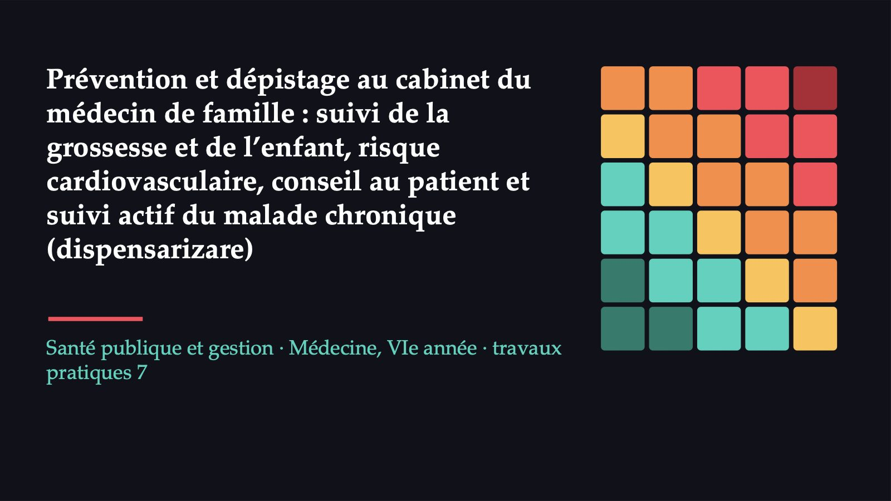
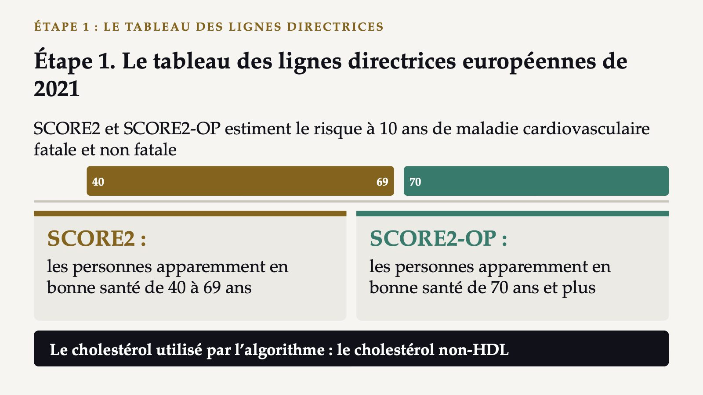
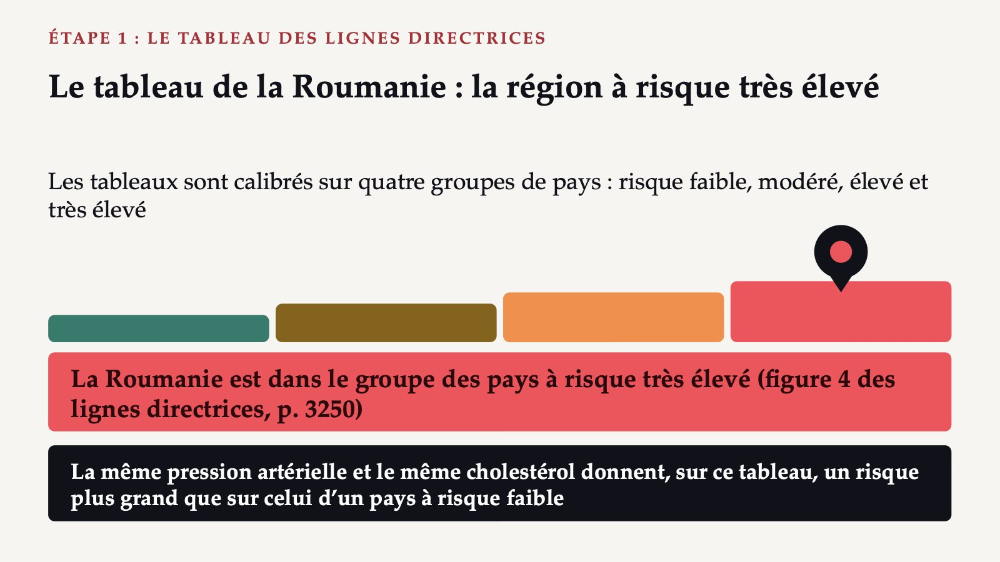
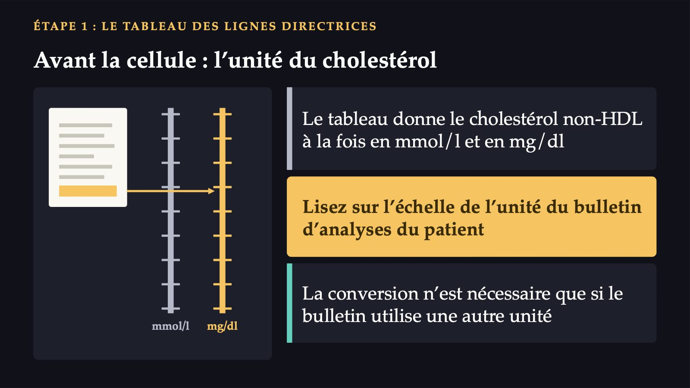
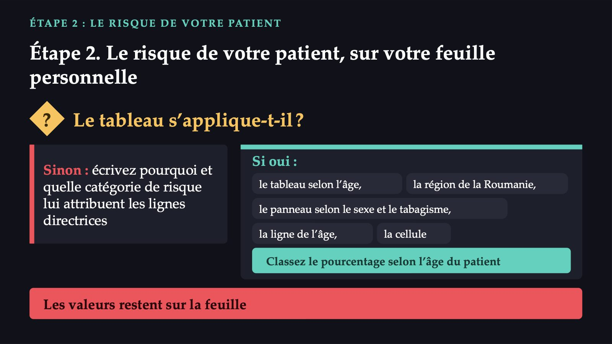
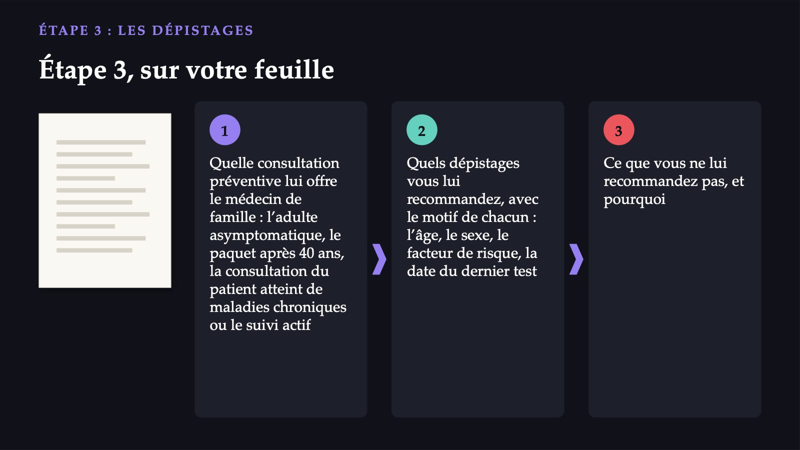

Prévention et dépistage au cabinet du médecin de famille : suivi de la grossesse et de l’enfant, risque cardiovasculaire, conseil au patient et suivi actif du malade chronique (dispensarizare)

1 / 44Bonjour. La séance d’aujourd’hui est une consultation préventive du médecin de famille, faite par chacun d’entre vous sur un patient réel, celui que vous avez apporté de votre stage.
Aujourd’hui, vous êtes le médecin de famille, lors d’une consultation préventive
 2 / 44
2 / 44Cette séance n’utilise aucun patient construit. Chacun d’entre vous a apporté un adulte vu en stage, sans nom, et fait pour lui ce que fait le médecin de famille lors d’une consultation préventive : il estime le risque cardiovasculaire d’après les lignes directrices européennes, décide quels dépistages il lui recommande et pourquoi, rédige le plan préventif et formule ce qu’il dirait au patient. Le titre de la séance comprend aussi le suivi de la grossesse et de l’enfant. En salle, nous travaillons sur l’adulte, mais la grossesse et l’enfant font partie de la même consultation préventive du médecin de famille : leurs calendriers sont dans les notes, à la section 4, et ils entrent dans l’examen.
Ce que demande la fiche de la discipline
![OUVERTURE Ce que demande la fiche de la discipline L’étudiant sera capable de « Evalua riscul cardiovascular al unui pacient adult, planifica urmărirea preventivă în asistența primară (urmărirea sarcinii și a copilului, dispensarizarea pacienților cu boli cronice), recomanda screeningul și consilia pacientul » (compétence A1 de la fiche en roumain ; en français : évaluer le risque cardiovasculaire d’un patient adulte, planifier le suivi préventif en soins primaires — suivi de la grossesse et de l’enfant, suivi actif des patients atteints de maladies chroniques —, recommander le dépistage et conseiller le patient) La fiche prévoit la présentation de cas, des scénarios cliniques et le jeu de rôle pour le conseil Aujourd’hui, à la place du scénario et du jeu de rôle : le patient réel que vous avez apporté](diapozitive/LP07/003.jpg) 3 / 44
3 / 44La fiche de la discipline formule ainsi la compétence visée par cette séance : évaluer le risque cardiovasculaire d’un patient adulte, planifier le suivi préventif en soins primaires, y compris le suivi de la grossesse et de l’enfant et le suivi actif des patients atteints de maladies chroniques, recommander le dépistage et conseiller le patient. Pour cette séance, la fiche prévoit la présentation de cas, la résolution de problèmes sur des scénarios cliniques et le jeu de rôle pour le conseil au patient. Aujourd’hui, à la place du scénario et du jeu de rôle, vous travaillez sur le patient réel.
Votre feuille reste chez vous
![OUVERTURE Votre feuille reste chez vous N’écrivez pas : le nom, les initiales, le code numérique personnel, le service, la chambre, la date d’hospitalisation ou de consultation, la localité Écrivez uniquement ce dont le médecin de famille a besoin : l’âge et le sexe, le tabagisme, la pression systolique, le cholestérol avec l’unité du bulletin d’analyses, les maladies qui modifient le risque, la grossesse, le poids et la taille, les antécédents familiaux, les données pour le dépistage Une donnée manquante s’écrit « manquant » : le médecin de famille la demanderait La feuille n’est pas remise et est détruite après la séance](diapozitive/LP07/004.jpg) 4 / 44
4 / 44Avant toute chose, regardez votre feuille. Elle ne doit porter ni le nom, ni les initiales, ni le code numérique personnel, ni le service, ni la chambre, ni la date d’hospitalisation ou de consultation, ni la localité, ni aucun autre élément permettant de reconnaître le patient. Si vous avez noté quelque chose de ce genre, effacez-le maintenant. Sur la feuille restent uniquement les données dont le médecin de famille a besoin pour le risque cardiovasculaire et pour le dépistage. Si une donnée manque dans le dossier du patient, écrivez « manquant » et ne la complétez pas par supposition : ce qui manque fait partie du plan, parce que le médecin de famille le demanderait. La feuille n’est pas remise et est détruite après la séance
Ce qui entre dans le formulaire de la fiche
 5 / 44
5 / 44Dans le formulaire de la fiche de travail, vous remettez uniquement ceci : l’âge par tranche de dix ans et le sexe ; la catégorie de risque cardiovasculaire à laquelle vous êtes arrivés, sans valeurs, ou, si le tableau ne s’applique pas, la mention « le tableau ne s’applique pas (maladie à risque élevé) », sans le nom de la maladie ; le plan préventif ; les dépistages recommandés, avec leur motif ; ce que vous diriez au patient. La pression artérielle, le cholestérol et les autres valeurs restent sur votre feuille. La fiche entre dans le portfolio des travaux pratiques.
Comment nous travaillons aujourd’hui
6 / 44La séance dure deux heures et chacun travaille individuellement, sur son patient. Je vous montre d’abord le tableau des lignes directrices et l’ordre dans lequel il se lit. Vous estimez ensuite le risque de votre patient, sur la feuille. Viennent ensuite les règles roumaines : quelle consultation préventive lui offre le médecin de famille et quels dépistages il lui recommande. Vous écrivez ensuite le plan et le conseil dans le formulaire de la fiche. À la fin, quelques plans sont lus et discutés avec toute la salle ; en cours de séance, le téléphone sert uniquement pour les opinions et les questions anonymes. Nous terminons par les trois questions finales et par un jeu Kahoot.
Étape 1. Le tableau des lignes directrices européennes de 2021

7 / 44Les tableaux SCORE2 estiment le risque à 10 ans de maladie cardiovasculaire fatale et non fatale. Les lignes directrices européennes de prévention de 2021, celles de la bibliographie de la fiche, utilisent SCORE2 chez les personnes apparemment en bonne santé de 40 à 69 ans et SCORE2-OP chez celles de 70 ans et plus. Le cholestérol utilisé par l’algorithme est le cholestérol non-HDL.
Première étape : le tableau s’applique-t-il ?
![ÉTAPE 1 : LE TABLEAU DES LIGNES DIRECTRICES Première étape : le tableau s’applique-t-il ? L’erreur à éviter : le tableau donnerait un chiffre, mais ce chiffre n’a aucun sens ; le patient a déjà, du fait de sa maladie, la catégorie que lui attribuent les lignes directrices Le tableau ne s’applique pas en cas de: maladie cardiovasculaire documentée diabète sucré hypercholestérolémie familiale et autres troubles génétiques ou rares des lipides ou de la pression artérielle maladie rénale chronique grossesse](diapozitive/LP07/008.jpg) 8 / 44
8 / 44La première étape n’est pas la lecture du tableau, mais la question de savoir s’il s’applique. Les tableaux SCORE2 ne s’appliquent pas aux personnes atteintes d’une maladie cardiovasculaire documentée ou d’autres affections à risque élevé : le diabète sucré, l’hypercholestérolémie familiale et d’autres troubles génétiques ou rares des lipides ou de la pression artérielle, la maladie rénale chronique ; ils ne s’appliquent pas non plus aux femmes enceintes. L’erreur à éviter est d’appliquer le tableau à un patient atteint de diabète, d’un antécédent d’infarctus, d’une maladie rénale chronique ou d’une hypercholestérolémie familiale. Le tableau donnerait un chiffre, mais ce chiffre n’a aucun sens : le patient a déjà, du fait de sa maladie, la catégorie que lui attribuent les lignes directrices, le plus souvent un risque élevé ou très élevé.
Quand le tableau ne s’applique pas : la catégorie est donnée par les lignes directrices
![ÉTAPE 1 : LE TABLEAU DES LIGNES DIRECTRICES Quand le tableau ne s’applique pas : la catégorie est donnée par les lignes directrices Maladie cardiovasculaire athéroscléreuse documentée : en moyenne, risque très élevé d’événements récurrents, si les facteurs de risque ne sont pas traités Diabète sucré : risque élevé chez la plupart ; très élevé en cas d’atteinte sévère des organes cibles ; modéré pour le diabète bien contrôlé, de courte durée (par exemple moins de 10 ans), sans atteinte d’organe cible et sans autre facteur de risque Grossesse : le tableau ne s’applique pas ; le plan indique uniquement ce motif Maladie rénale chronique, sans diabète et sans maladie athéroscléreuse : élevé dans la forme modérée, très élevé dans la forme sévère Forme modérée : débit de filtration glomérulaire estimé de 30 à 44 ml/min/1,73 m² avec un rapport albumine/créatinine inférieur à 30 mg/g, de 45 à 59 avec un rapport de 30 à 300 mg/g, ou d’au moins 60 avec un rapport supérieur à 300 mg/g ; forme sévère : débit inférieur à 30 ou de 30 à 44 avec un rapport supérieur à 30 mg/g Hypercholestérolémie familiale : risque élevé](diapozitive/LP07/009.jpg) 9 / 44
9 / 44Pour ces patients, le risque se juge autrement : les lignes directrices leur attribuent la catégorie de risque sans tableau. Si votre patient se trouve dans l’une de ces situations, écrivez dans le plan pourquoi vous n’avez pas utilisé le tableau et quelle catégorie de risque lui attribuent les lignes directrices. La maladie athéroscléreuse documentée signifie, en moyenne, un risque très élevé d’événements récurrents si les facteurs de risque ne sont pas traités. Le diabète signifie un risque élevé chez la plupart des patients, très élevé en cas d’atteinte sévère des organes cibles, et un diabète bien contrôlé, de courte durée, sans atteinte d’organe cible et sans autre facteur de risque, peut être considéré à risque modéré. La maladie rénale chronique donne un risque élevé dans la forme modérée et très élevé dans la forme sévère ; les formes se distinguent d’après le débit de filtration glomérulaire estimé et d’après le rapport albumine/créatinine urinaire. L’hypercholestérolémie familiale donne un risque élevé. Pendant la grossesse, le tableau ne s’applique pas, et le plan indique uniquement ce motif. Forme modérée : forme sévère : débit inférieur à 30 ou de 30 à 44 avec un rapport supérieur à 30 mg/g Forme modérée : débit de filtration glomérulaire estimé de 30 à 44 ml/min/1,73 m² avec un rapport albumine/créatinine inférieur à 30 mg/g, de 45 à 59 avec un rapport de 30 à 300 mg/g, ou d’au moins 60 avec un rapport supérieur à 300 mg/g
Le tableau de la Roumanie : la région à risque très élevé

10 / 44Les deux tableaux sont calibrés sur quatre groupes de pays, selon le risque cardiovasculaire : faible, modéré, élevé et très élevé. La Roumanie est classée dans le groupe des pays à risque très élevé. Le tableau adapté à un patient de Roumanie est donc celui de la région à risque très élevé ; la même pression artérielle et le même cholestérol donnent sur ce tableau un risque plus grand que sur celui d’un pays à risque faible.
Ce qui se lit, dans quel ordre
![ÉTAPE 1 : LE TABLEAU DES LIGNES DIRECTRICES Ce qui se lit, dans quel ordre Figure 3 des lignes directrices, p. 3246, diagramme de la région à risque très élevé 1 Le patient est-il apparemment en bonne santé ? (sans maladie cardiovasculaire, diabète, maladie rénale chronique, hypercholestérolémie familiale ni grossesse) 2 Le tableau, selon l’âge : SCORE2 de 40 à 69 ans, SCORE2-OP à 70 ans et plus 3 La région : pour la Roumanie, celle à risque très élevé 4 Le panneau, selon le sexe et le tabagisme ; puis la ligne de l’âge le plus proche (près de la tranche d’âge suivante, l’estimation est ajustée à la hausse) 5 La cellule : le cholestérol non-HDL et la pression systolique les plus proches de ceux du patient ; le pourcentage de la cellule 6 La catégorie : le pourcentage classé selon l’âge](diapozitive/LP07/011.jpg) 11 / 44
11 / 44L’explication se fait sur le tableau des lignes directrices, non sur un patient. Vérifiez d’abord que le patient est apparemment en bonne santé. Choisissez ensuite le tableau selon l’âge : SCORE2 de 40 à 69 ans, SCORE2-OP à 70 ans et plus. Pour la Roumanie, choisissez la région à risque très élevé. Choisissez le panneau selon le sexe et le tabagisme, puis la ligne de l’âge le plus proche ; si le patient approche de la tranche d’âge suivante, l’estimation est ajustée à la hausse. Sur cette ligne, trouvez la colonne du cholestérol non-HDL et la ligne de la pression systolique les plus proches des valeurs du patient et lisez le pourcentage dans la cellule. Classez enfin le pourcentage dans la catégorie de risque adaptée à l’âge.
Avant la cellule : l’unité du cholestérol

12 / 44Avant de lire la cellule, vérifiez l’unité de mesure du cholestérol sur le bulletin d’analyses du patient. Le tableau donne le cholestérol non-HDL à la fois en millimoles par litre et en milligrammes par décilitre : lisez sur l’échelle de l’unité du bulletin ; la conversion n’est nécessaire que si le bulletin utilise une autre unité.
Même pourcentage, autre catégorie à un autre âge
![ÉTAPE 1 : LE TABLEAU DES LIGNES DIRECTRICES Même pourcentage, autre catégorie à un autre âge Source : tableau 5 des lignes directrices européennes de 2021, p. 3251 Près du seuil d’âge : une certaine souplesse Moins de 50 ans : faible à modéré, moins de 2,5 % · élevé, de 2,5 % à moins de 7,5 % · très élevé, 7,5 % et plus 2,5 % 7,5 % 50–69 ans : faible à modéré, moins de 5 % · élevé, de 5 % à moins de 10 % · très élevé, 10 % et plus 5 % 10 % 70 ans et plus : faible à modéré, moins de 7,5 % · élevé, de 7,5 % à moins de 15 % · très élevé, 15 % et plus 7,5 % 15 %](diapozitive/LP07/013.jpg) 13 / 44
13 / 44Le même pourcentage ne signifie pas la même chose à tout âge. Les lignes directrices fixent des seuils qui augmentent avec l’âge : avant 50 ans, le risque très élevé commence à 7,5 % ; à 50–69 ans, à 10 % ; à 70 ans et plus, à 15 %. Comme l’âge est continu et que les tranches sont au nombre de trois, les seuils augmentent par paliers ; les lignes directrices demandent donc une certaine souplesse lorsque le patient approche de la tranche d’âge suivante. 70 ans et plus : faible à modéré, moins de 7,5 % · élevé, de 7,5 % à moins de 15 % · très élevé, 15 % et plus
Ce qui suit pour chaque catégorie
![ÉTAPE 1 : LE TABLEAU DES LIGNES DIRECTRICES Ce qui suit pour chaque catégorie La catégorie ne conduit pas automatiquement aux médicaments : les modificateurs de risque, le risque au cours de la vie, le bénéfice, les comorbidités, la fragilité et les préférences du patient Risque faible à modéré : le traitement des facteurs de risque n’est en général pas recommandé Risque élevé : le traitement doit être envisagé Risque très élevé : le traitement est en général recommandé À 70 ans et plus : le traitement hypolipémiant peut être envisagé (recommandation plus faible) Pour tous : l’arrêt du tabac, le mode de vie, une pression systolique inférieure à 160 mmHg](diapozitive/LP07/014.jpg) 14 / 44
14 / 44Au risque faible à modéré, le traitement des facteurs de risque n’est en général pas recommandé ; au risque élevé, il doit être envisagé ; au risque très élevé, il est en général recommandé. Chez les personnes de 70 ans et plus, le traitement hypolipémiant fait l’objet d’une recommandation plus faible : il peut être envisagé. Quelle que soit la catégorie, l’arrêt du tabac, les recommandations sur le mode de vie et une pression systolique inférieure à 160 mmHg sont recommandés à tous. La catégorie ne conduit pas automatiquement à un traitement médicamenteux : les modificateurs de risque, le risque au cours de la vie, le bénéfice du traitement, les comorbidités, la fragilité et les préférences du patient peuvent guider la décision.
Étape 2. Le risque de votre patient, sur votre feuille personnelle

15 / 44Travaillez maintenant sur votre patient, sur votre feuille personnelle. Vérifiez d’abord si le tableau s’applique. S’il s’applique, lisez la cellule et classez le patient selon l’âge. S’il ne s’applique pas, écrivez pourquoi et quelle catégorie de risque lui attribuent les lignes directrices. Les valeurs restent sur la feuille.
Étape 3. Les règles roumaines
![ÉTAPE 3 : LES RÈGLES ROUMAINES Étape 3. Les règles roumaines Ce que fait le médecin de famille dans l’assurance maladie et ce qui lui est remboursé : le paquet de services de base des soins primaires La décision du Gouvernement (Hotărârea Guvernului) n° 521/2023 et ses normes, approuvées par l’arrêté conjoint du ministère de la Santé (Ministerul Sănătății) et de la Caisse nationale d’assurance maladie (Casa Națională de Asigurări de Sănătate) portant le numéro « 1.857/441/2023 » La forme consolidée au 1er janvier 2026, sur le portail législatif du ministère de la Justice (Ministerul Justiției)](diapozitive/LP07/016.jpg) 16 / 44
16 / 44Le tableau vous donne la catégorie de risque. Ce que le médecin de famille peut faire dans le cadre de l’assurance maladie et ce qui lui est remboursé est fixé par le paquet de services de base des soins primaires, dans les normes d’application de la décision du Gouvernement n° 521/2023. Les notes suivent la forme consolidée des normes au 1er janvier 2026, la dernière de l’historique du portail législatif à la date de la consultation. La forme consolidée au 1er janvier 2026, sur le portail législatif du ministère de la Justice (Ministerul Justiției)
L’adulte asymptomatique, sans maladie chronique suivie : 18 à 39 ans
![ÉTAPE 3 : LES RÈGLES ROUMAINES L’adulte asymptomatique, sans maladie chronique suivie : 18 à 39 ans La femme qui planifie une grossesse : aussi la sénologie par imagerie, le frottis cervico-utérin (test de Babeș-Papanicolau) tous les 2 ans, le test VDRL ou RPR (pour la syphilis) La consultation est annuelle : le médecin évalue l’exposition aux facteurs de risque et remplit la riscogramă (fiche roumaine d’évaluation du risque) pour la tranche d’âge et le sexe Au plus deux consultations par an sont remboursées ; la seconde, l’intervention individuelle sur les risques modifiables, dans un délai maximal de 90 jours après la première Les analyses recommandées : numération formule sanguine complète, vitesse de sédimentation des hématies (VS), glycémie, cholestérol total, LDL-cholestérol, créatinine sérique avec le débit de filtration glomérulaire estimé, transaminases, rapport albumine/créatinine urinaire](diapozitive/LP07/017.jpg) 17 / 44
17 / 44Les consultations préventives d’évaluation du risque individuel sont proposées activement, au cabinet, aux adultes asymptomatiques que le médecin de famille ne suit pour aucune maladie chronique. Pour les 18 à 39 ans, la consultation est annuelle : le médecin évalue l’exposition aux facteurs de risque et remplit la riscogramă pour la tranche d’âge et le sexe. Au plus deux consultations par an sont remboursées, et la seconde, celle de l’intervention individuelle sur les risques modifiables, a lieu dans un délai maximal de 90 jours après la première. Vous voyez à l’écran la liste des analyses recommandées pour la prévention ; pour la femme de 18 à 39 ans qui planifie une grossesse, elle comprend aussi la sénologie par imagerie, le test de Babeș-Papanicolau tous les 2 ans et le test de la syphilis.
L’adulte asymptomatique de plus de 40 ans
![ÉTAPE 3 : LES RÈGLES ROUMAINES L’adulte asymptomatique de plus de 40 ans La limite d’âge n’est pas écrite de la même manière : le paquet, « plus de 40 ans » ; la liste des analyses, « 40 ans et plus » Chaque année, un paquet de prévention de 1 à 3 consultations : l’évaluation initiale, l’intervention individuelle sur les risques modifiables, le contrôle, dans un intervalle d’au plus 6 mois consécutifs Avec la déclaration du service sont transmis : la pression artérielle, l’indice de masse corporelle, les antécédents familiaux de décès cardiovasculaire prématuré ou de maladies familiales des lipides, le statut de fumeur Les analyses : les mêmes qu’à 18–39 ans, plus le PSA (antigène prostatique spécifique) chez les hommes et, chez les femmes, la sénologie par imagerie, la thyréostimuline (TSH) et la thyroxine libre (FT4)](diapozitive/LP07/018.jpg) 18 / 44
18 / 44Pour les plus de 40 ans, un paquet de prévention de 1 à 3 consultations est remboursé chaque année : l’évaluation initiale, l’intervention individuelle sur les risques modifiables et le contrôle, dans un intervalle d’au plus 6 mois consécutifs. La pression artérielle, l’indice de masse corporelle, les antécédents familiaux de décès prématuré par maladie cardiovasculaire ou de maladies familiales du métabolisme des lipides et le statut de fumeur sont transmis avec la déclaration du service, pour sa validation. Les analyses recommandées à partir de 40 ans sont celles de 18 à 39 ans, auxquelles s’ajoutent le PSA chez les hommes et, chez les femmes, la sénologie par imagerie et les tests thyroïdiens. Observez que la limite d’âge n’est pas écrite de la même manière aux deux endroits. Les analyses : les mêmes qu’à 18–39 ans, plus le PSA (antigène prostatique spécifique) chez les hommes et, chez les femmes, la sénologie par imagerie, la thyréostimuline (TSH) et la thyroxine libre (FT4)
La riscogramă : le document de la consultation préventive
![ÉTAPE 3 : LES RÈGLES ROUMAINES La riscogramă : le document de la consultation préventive À 40 ans et plus : le mode de vie, le risque cardiovasculaire, le risque oncologique, le risque de maladie rénale chronique Le mode de vie : le tabagisme (en paquets-années), la consommation problématique d’alcool (avec un questionnaire standardisé), l’activité physique, l’alimentation et l’indice de masse corporelle, la santé bucco-dentaire La consultation se termine par un « sfat minimal pentru schimbarea comportamentelor » (« conseil minimal pour le changement des comportements ») La riscogramă : annexe n° 2 B de l’arrêté conjoint](diapozitive/LP07/019.jpg) 19 / 44
19 / 44La riscogramă est le document de la consultation préventive. Pour l’adulte de 40 ans et plus, elle comprend l’évaluation du mode de vie, du risque cardiovasculaire, du risque oncologique et du risque de maladie rénale chronique. Le mode de vie s’évalue par le tabagisme, en paquets-années, la consommation problématique d’alcool, avec un questionnaire standardisé, l’activité physique, l’alimentation et l’indice de masse corporelle et la santé bucco-dentaire, et la consultation se termine par un conseil minimal pour le changement des comportements. La riscogramă : annexe n° 2 B de l’arrêté conjoint
La riscogramă : le risque cardiovasculaire
![ÉTAPE 3 : LES RÈGLES ROUMAINES La riscogramă : le risque cardiovasculaire Les normes demandent les tableaux SCORE du programme européen HeartScore : le risque d’événement cardiovasculaire fatal dans les 10 ans à venir 5 % Entrent dans le suivi actif les patients dont le SCORE est d’au moins 5 % ou qui présentent des valeurs élevées d’un seul facteur de risque Le cholestérol total : chez les hommes de plus de 40 ans et chez les femmes de plus de 50 ans ou ménopausées ; répété à 5 ans au risque normal La glycémie : si la tension dépasse 140/90 mmHg, si l’indice de masse corporelle dépasse 30 ou en cas d’antécédents familiaux de maladie cardiovasculaire prématurée ou de maladies familiales des lipides La créatinine avec le débit de filtration estimé : chez toutes les personnes dont la tension dépasse 140/90 mmHg](diapozitive/LP07/020.jpg) 20 / 44
20 / 44Pour le risque cardiovasculaire, les normes demandent d’utiliser les tableaux SCORE du programme européen HeartScore, qui estiment le risque d’événement cardiovasculaire fatal dans les 10 ans à venir, et d’inclure dans le suivi actif les patients dont le SCORE est d’au moins 5 % ou qui présentent des valeurs élevées d’un seul facteur de risque. Le cholestérol total est mesuré chez les hommes de plus de 40 ans et chez les femmes de plus de 50 ans ou ménopausées, et répété à 5 ans chez les personnes à risque normal. La glycémie est demandée si la tension dépasse 140/90 mmHg, si l’indice de masse corporelle dépasse 30 ou en cas d’antécédents familiaux de maladie cardiovasculaire prématurée ou de maladies familiales des lipides, et la créatinine avec le débit de filtration estimé, chez toutes les personnes dont la tension dépasse 140/90 mmHg.
Deux règles, deux échelles
![ÉTAPE 3 : LES RÈGLES ROUMAINES Deux règles, deux échelles Dans le plan : la catégorie de risque est donnée par les lignes directrices ; la consultation, l’entrée dans le suivi actif et le niveau de risque des normes sont donnés par les normes Les lignes directrices européennes : SCORE2, événements fatals et non fatals, avec des seuils par âge Les normes roumaines : les tableaux SCORE du risque fatal ; un SCORE d’au moins 5 % dans la riscogramă conduit au suivi actif 5 % SCORE 10 % SCORE2 Les échelles ne se superposent pas : à 50–69 ans, le seuil de 5 % de l’ancien SCORE correspond, en moyenne, au seuil de 10 % de SCORE2](diapozitive/LP07/021.jpg) 21 / 44
21 / 44Observez la différence entre les deux règles que vous appliquez. Les lignes directrices européennes de la fiche utilisent SCORE2, qui estime les événements fatals et non fatals, avec des seuils par âge ; les normes roumaines parlent des tableaux SCORE du risque fatal. Dans la riscogramă, un SCORE d’au moins 5 % conduit à l’inclusion dans le suivi actif, et là, les normes classent le patient dans l’un des quatre niveaux de risque. Les deux échelles ne se superposent pas : à 50–69 ans, le seuil de 5 % de l’ancien SCORE, qui compte les décès cardiovasculaires à 10 ans, correspond, en moyenne, au seuil de 10 % de SCORE2, qui compte aussi les événements non fatals. Votre plan respecte les deux.
Les niveaux de risque des normes, dans le suivi actif
![ÉTAPE 3 : LES RÈGLES ROUMAINES Les niveaux de risque des normes, dans le suivi actif Source : normes des paquets de services, annexe 1, lettre B, point 1.1.4.2 Faible : SCORE inférieur à 1 % ; tension normale ou hypertension de grade 1 au plus Modéré : SCORE d’au moins 1 % et inférieur à 5 % ; hypertension de grade 2 ; patients jeunes diabétiques (type 1 avant 35 ans, type 2 avant 50 ans), avec un diabète de moins de 10 ans et sans autre facteur de risque Élevé : SCORE de 5 % à moins de 10 % ; un seul facteur de risque très élevé (triglycérides supérieurs à 310 mg/dl, LDL-cholestérol supérieur à 190 mg/dl, tension d’au moins 180/110 mmHg) ; hypercholestérolémie familiale sans autres facteurs majeurs ; diabète sans atteinte d’organe cible, d’une durée d’au moins 10 ans ou avec un autre facteur de risque ; maladie rénale chronique modérée (débit de filtration 30–59 ml/min/1,73 m²) Très élevé : SCORE d’au moins 10 % ; maladie cardiovasculaire athéroscléreuse documentée cliniquement ou par imagerie ; diabète avec atteinte d’organe cible, avec au moins 3 facteurs majeurs ou de type 1 à début précoce et de plus de 20 ans de durée ; maladie rénale chronique sévère (débit de filtration inférieur à 30 ml/min/1,73 m²) ; hypercholestérolémie familiale avec maladie athéroscléreuse ou avec un autre facteur majeur](diapozitive/LP07/022.jpg) 22 / 44
22 / 44Dans le suivi actif, les normes classent le patient dans l’un de ces quatre niveaux de risque : faible, modéré, élevé et très élevé. Les seuils SCORE des normes sont 1 %, 5 % et 10 %, du risque fatal à 10 ans ; dans les mêmes niveaux entrent aussi l’hypertension selon son grade, le diabète selon l’âge, la durée et l’atteinte des organes cibles, la maladie rénale chronique selon le débit de filtration et l’hypercholestérolémie familiale. Faible : tension normale ou hypertension de grade 1 au plus Élevé : un seul facteur de risque très élevé (triglycérides supérieurs à 310 mg/dl, LDL-cholestérol supérieur à 190 mg/dl, tension d’au moins 180/110 mmHg) Élevé : hypercholestérolémie familiale sans autres facteurs majeurs Très élevé : diabète avec atteinte d’organe cible, avec au moins 3 facteurs majeurs ou de type 1 à début précoce et de plus de 20 ans de durée Modéré : patients jeunes diabétiques (type 1 avant 35 ans, type 2 avant 50 ans), avec un diabète de moins de 10 ans et sans autre facteur de risque Élevé : diabète sans atteinte d’organe cible, d’une durée d’au moins 10 ans ou avec un autre facteur de risque Très élevé : hypercholestérolémie familiale avec maladie athéroscléreuse ou avec un autre facteur majeur
Qui ne reçoit pas la riscogramă et ce qu’il reçoit à la place
![ÉTAPE 3 : LES RÈGLES ROUMAINES Qui ne reçoit pas la riscogramă et ce qu’il reçoit à la place La riscogramă exclut les personnes à risque déjà accru : maladie cardiovasculaire connue, diabète de type 2 ou de type 1 avec microalbuminurie, maladie rénale chronique, valeurs déjà connues, très élevées, d’un facteur de risque ; elles entrent dans le suivi actif des maladies chroniques Le patient suivi pour une maladie chronique reçoit d’autres consultations préventives: Entre 40 et 60 ans : le dépistage précoce des risques modifiables d’autres maladies pesant lourd (cardiovasculaires et métaboliques, cancer, maladie rénale chronique, santé mentale, santé reproductive) Après 60 ans : le mode de vie, le risque cardiovasculaire fatal, le risque oncologique, le risque de maladie rénale chronique, la santé mentale, y compris la dépression, le risque d’ostéoporose, d’incontinence urinaire, de mélanome et de démence](diapozitive/LP07/023.jpg) 23 / 44
23 / 44La riscogramă exclut les personnes qui ont déjà un risque accru : celles atteintes d’une maladie cardiovasculaire connue, d’un diabète sucré de type 2 ou de type 1 avec microalbuminurie, d’une maladie rénale chronique ou de valeurs déjà connues, très élevées, d’un facteur de risque ; elles entrent dans le suivi actif des maladies chroniques. Le patient déjà suivi par le médecin de famille pour une maladie chronique ne reçoit pas la consultation de l’adulte asymptomatique, mais d’autres consultations préventives. Entre 40 et 60 ans, la consultation de dépistage précoce recherche les risques modifiables d’autres maladies pesant lourd dans la charge de morbidité. Après 60 ans, la consultation évalue, en plus des risques précédents, la santé mentale, y compris la dépression, et le risque d’ostéoporose, d’incontinence urinaire, de mélanome et de démence.
La « dispensarizare » aujourd’hui : le suivi actif
![ÉTAPE 3 : LES RÈGLES ROUMAINES La « dispensarizare » aujourd’hui : le suivi actif Le nom dans les normes : « Consultații de monitorizare activă prin plan de management integrat pe bază de programare » (consultations de suivi actif par plan de prise en charge intégrée sur rendez-vous) Les maladies : le risque cardiovasculaire élevé (l’hypertension artérielle, la dyslipidémie, la maladie rénale chronique, le diabète sucré de type 2), l’asthme bronchique, la bronchopneumopathie chronique obstructive L’évaluation initiale du cas nouvellement dépisté : jusqu’à trois consultations, dans un intervalle d’au plus 3 mois consécutifs Le suivi : deux consultations programmées en 3 mois au plus ; un nouveau suivi après 6 mois consécutifs Le plan de prise en charge : les objectifs cliniques et les interventions (le tabac, l’alimentation, l’activité physique, la tension, le cholestérol et la glycémie aux valeurs cibles, l’éducation à l’autosoin)](diapozitive/LP07/024.jpg) 24 / 44
24 / 44Dans la pratique roumaine, l’inscription et le suivi périodique, actif, du malade chronique s’appellent « dispensarizare ». Dans les normes actuelles, le service s’intitule consultations de suivi actif par plan de prise en charge intégrée sur rendez-vous. Le rythme est fixé : l’évaluation initiale du cas nouvellement dépisté peut comprendre trois consultations dans un intervalle d’au plus 3 mois consécutifs, avec le bilan clinique, le dépistage des complications, la mise en route et l’ajustement du traitement et l’éducation du patient ; le suivi comprend ensuite deux consultations programmées dans un intervalle d’au plus 3 mois, et un nouveau suivi a lieu après 6 mois consécutifs. Lors de l’évaluation initiale du risque cardiovasculaire, le médecin évalue l’atteinte des organes cibles, stratifie le risque et établit le plan de prise en charge. Le plan de prise en charge : les objectifs cliniques et les interventions (le tabac, l’alimentation, l’activité physique, la tension, le cholestérol et la glycémie aux valeurs cibles, l’éducation à l’autosoin)
La riscogramă oncologique
![ÉTAPE 3 : LES DÉPISTAGES La riscogramă oncologique Elle consigne : les cancers chez les parents au premier degré, l’exposition professionnelle ou liée au mode de vie, les dépistages antérieurs pour les cancers des programmes nationaux Le médecin inclut les personnes éligibles dans les programmes de dépistage populationnel Il adresse pour évaluation spécialisée les personnes à risque élevé, par exemple de cancer du sein, colorectal ou de l’ovaire Au risque normal, l’intervention à échéance : la date du dernier frottis cervico-utérin (test de Babeș-Papanicolau), chez les femmes de 25 à 39 ans et de 40 à 64 ans](diapozitive/LP07/025.jpg) 25 / 44
25 / 44La riscogramă oncologique consigne les cancers chez les parents au premier degré, l’exposition professionnelle ou liée au mode de vie et les dépistages antérieurs pour les cancers des programmes nationaux. Le médecin inclut les personnes éligibles dans les programmes de dépistage populationnel et adresse pour évaluation spécialisée les personnes à risque élevé, par exemple de cancer du sein, colorectal ou de l’ovaire. Comme intervention préventive à échéance dans la population à risque normal, la riscogramă consigne la date du dernier frottis cervico-utérin chez les femmes de 25 à 39 ans et chez celles de 40 à 64 ans.
Deux dépistages aux critères écrits dans les normes
![ÉTAPE 3 : LES DÉPISTAGES Deux dépistages aux critères écrits dans les normes 50 69 35 64 25 34 Le test : chez le médecin spécialiste en obstétrique-gynécologie ; le résultat est déclaré au programme national de dépistage du cancer du col de l’utérus La mammographie : les femmes asymptomatiques de 50 à 69 ans, sans diagnostic confirmé de cancer du sein, tous les 2 ans (« examenul de depistare precoce a cancerului de sân », examen de dépistage précoce du cancer du sein) Le test du papillomavirus humain (HPV) : les femmes asymptomatiques de 35 à 64 ans et celles de 25 à 34 ans dont l’examen cytologique est positif Résultat positif à 35–64 ans : triage cytologique ; résultat négatif : répété 5 ans plus tard](diapozitive/LP07/026.jpg) 26 / 44
26 / 44Deux dépistages du cancer ont, dans les normes, des critères d’éligibilité écrits. La mammographie de dépistage précoce s’adresse aux femmes asymptomatiques de 50 à 69 ans sans diagnostic confirmé de cancer du sein et se fait tous les 2 ans. Le test du papillomavirus humain s’adresse aux femmes asymptomatiques de 35 à 64 ans, ainsi qu’à celles de 25 à 34 ans dont l’examen cytologique est positif ; un résultat positif à 35–64 ans conduit à un triage cytologique, et un résultat négatif est répété 5 ans plus tard. Le test se fait en se présentant chez le médecin spécialiste en obstétrique-gynécologie, et le résultat est déclaré au programme national de dépistage du cancer du col de l’utérus.
La stratégie et le service effectif
![ÉTAPE 3 : LES DÉPISTAGES La stratégie et le service effectif Les âges de la stratégie et ceux des normes ne coïncident pas : le plan suit le service que la patiente peut effectivement recevoir, et la différence est énoncée telle quelle 2021–2023 2024 Le cancer colorectal : le projet pilote populationnel de 2021–2023 a inclus des personnes de 50 à 74 ans En 2024, le ministère de la Santé a adopté des méthodologies nationales pour le dépistage colorectal, cervical et mammaire La stratégie adoptée en 2024 (profil de pays de l’Organisation de coopération et de développement économiques, 2025) : le test viral primaire, avec triage cytologique, pour les femmes de 25 à 65 ans, tous les cinq ans](diapozitive/LP07/027.jpg) 27 / 44
27 / 44D’après le profil de pays publié en 2025 par l’Organisation de coopération et de développement économiques, la stratégie adoptée en 2024 prévoit le test viral primaire, avec triage cytologique, pour les femmes de 25 à 65 ans, tous les cinq ans. Les âges de la stratégie et ceux des normes ne coïncident pas ; votre plan suit le service que la patiente peut effectivement recevoir, et vous énoncez la différence telle quelle. Pour le cancer colorectal, le projet pilote populationnel de 2021–2023 a inclus des personnes de 50 à 74 ans ; en 2024, le ministère de la Santé a adopté des méthodologies nationales pour le dépistage colorectal, cervical et mammaire.
Le diabète et la maladie rénale chronique
![ÉTAPE 3 : LES DÉPISTAGES Le diabète et la maladie rénale chronique Le diabète : aux adultes de 18 ans et plus, sans symptômes, en surpoids ou obèses ou présentant des facteurs de risque, la glycémie à jeun, le test d’hyperglycémie provoquée par voie orale ou l’hémoglobine glyquée, s’ils ne les ont pas faits au cours des 6 derniers mois Glycémie à jeun de 110–125 mg/dl, test d’hyperglycémie provoquée de 140–199 mg/dl ou hémoglobine glyquée de 5,7–6,49 % : le médecin de famille l’inclut dans le programme national du diabète et commence le traitement par la metformine La maladie rénale chronique : aux adultes de 18 ans et plus atteints de maladies cardiovasculaires, d’hypertension ou de diabète, la créatinine avec le débit de filtration estimé et le rapport albumine/créatinine urinaire, s’ils ne les ont pas faits au cours des 6 derniers mois Risque faible : chaque année ; risque modéré : tous les 3 mois ; risque élevé : adressage au néphrologue](diapozitive/LP07/028.jpg) 28 / 44
28 / 44Pour le diabète, aux adultes de 18 ans et plus sans symptômes, en surpoids ou obèses ou présentant des facteurs de risque, on recommande la glycémie à jeun, le test d’hyperglycémie provoquée par voie orale ou l’hémoglobine glyquée, s’ils ne les ont pas faits au cours des 6 derniers mois. Le patient dont la glycémie à jeun est de 110–125 mg/dl, le test d’hyperglycémie provoquée de 140–199 mg/dl ou l’hémoglobine glyquée de 5,7–6,49 % est inclus par le médecin de famille dans le programme national du diabète et commence le traitement par la metformine. Pour la maladie rénale chronique, aux adultes de 18 ans et plus atteints de maladies cardiovasculaires, d’hypertension ou de diabète, on recommande la créatinine avec le débit de filtration estimé et le rapport albumine/créatinine urinaire, s’ils ne les ont pas faits au cours des 6 derniers mois ; au risque faible, on répète chaque année, au risque modéré tous les 3 mois, et le risque élevé est adressé au néphrologue.
Ce qui n’entre pas en routine dans le plan
![ÉTAPE 3 : LES DÉPISTAGES Ce qui n’entre pas en routine dans le plan Un plan préventif n’est pas une liste de toutes les analyses possibles Si le plan recommande le PSA : il expose au patient les bénéfices et les risques et lui laisse la décision Organisation mondiale de la santé : pour les cancers du poumon, de la prostate, de l’ovaire, de la thyroïde, de l’estomac, du foie, de la peau et de la cavité buccale, les preuves sont insuffisantes ou la faisabilité reste à évaluer Le PSA (antigène prostatique spécifique) figure parmi les analyses recommandées aux hommes de 40 ans et plus, alors que les preuves en faveur du dépistage du cancer de la prostate sont insuffisantes](diapozitive/LP07/029.jpg) 29 / 44
29 / 44Un plan préventif n’est pas une liste de toutes les analyses possibles. L’Organisation mondiale de la santé considère que, pour les cancers du poumon, de la prostate, de l’ovaire, de la thyroïde, de l’estomac, du foie, de la peau et de la cavité buccale, les preuves sont insuffisantes ou que la faisabilité reste à évaluer. Le PSA figure parmi les analyses recommandées aux hommes de 40 ans et plus, alors que les preuves en faveur du dépistage du cancer de la prostate sont insuffisantes. Si votre plan recommande le test, il expose au patient les bénéfices et les risques et lui laisse la décision, comme dans la décision éclairée du cours 5.
Étape 3, sur votre feuille

30 / 44Travaillez de nouveau sur votre patient. Déterminez quelle consultation préventive lui offre le médecin de famille d’après les normes : la consultation de l’adulte asymptomatique, le paquet de prévention après 40 ans, la consultation du patient atteint de maladies chroniques ou le suivi actif. Décidez quels dépistages vous lui recommandez, avec le motif de chacun : l’âge, le sexe, le facteur de risque, la date du dernier test. Écrivez aussi ce que vous ne lui recommandez pas, avec le motif.
Étape 4. Ce que vous dites au patient
![ÉTAPE 4 : LE CONSEIL ET LE FORMULAIRE Étape 4. Ce que vous dites au patient La consultation préventive des normes se termine par un conseil minimal pour le changement des comportements À tous, quel que soit le risque (lignes directrices européennes) : l’arrêt du tabac, le changement du mode de vie, une pression systolique inférieure à 160 mmHg Un dépistage au bénéfice incertain : les bénéfices et les risques ; la décision revient au patient Cours 6 : un changement de comportement exige la capacité, l’opportunité et la motivation Le conseil comporte quatre parties : 1 le risque, en mots, non en pourcentages sans repère ; 2 un ou deux changements prioritaires, pas dix ; 3 quels dépistages il fait, pourquoi et où ; 4 quand il revient et ce qui sera alors vérifié](diapozitive/LP07/031.jpg) 31 / 44
31 / 44Le plan n’est pas terminé tant que vous ne savez pas ce que vous dites au patient. La consultation préventive des normes comporte une partie d’intervention individuelle sur les risques modifiables et se termine par un conseil minimal pour le changement des comportements. Les lignes directrices européennes recommandent à tout patient, quel que soit son risque, l’arrêt du tabac, le changement du mode de vie et une pression systolique inférieure à 160 mmHg. Ce que vous dites doit être compris et mis en pratique, pas seulement exact. Le cours 6 a montré que l’information n’agit que sur ce que le patient sait et qu’un changement de comportement exige à la fois la capacité, l’opportunité et la motivation. C’est pourquoi la règle de ce cours est que le conseil comporte quatre parties : quel risque a le patient, dit avec des mots ; un ou deux changements prioritaires ; quels dépistages il fait, pourquoi et où ; quand il revient et ce qui sera alors vérifié. Pour un dépistage au bénéfice incertain, le conseil expose les bénéfices et les risques et laisse la décision au patient.
Le formulaire de la fiche de travail : une étape unique
![ÉTAPE 4 : LE CONSEIL ET LE FORMULAIRE Le formulaire de la fiche de travail : une étape unique FORMULAIRE (a) la tranche d’âge de dix ans et le sexe du patient (b) la catégorie de risque cardiovasculaire, sans valeurs, ou « le tableau ne s’applique pas (maladie à risque élevé) », sans le nom de la maladie (c) la consultation préventive qu’offre le médecin de famille et ce qu’elle comporte (d) les dépistages recommandés, avec le motif de chacun, et ce que vous ne recommandez pas, avec le motif (e) ce que vous diriez au patient, en cinq lignes au plus Répondez sur votre téléphone, avec le code affiché. Le compte UMF ; les valeurs restent sur la feuille Forms compte UMF](diapozitive/LP07/032.jpg) 32 / 44
32 / 44Écrivez maintenant, dans le formulaire de la fiche de travail, pour votre patient, avec l’âge par tranche de dix ans et le sexe : la catégorie de risque, sans valeurs, ou la mention que le tableau ne s’applique pas ; la consultation préventive et ce qu’elle comporte ; les dépistages recommandés, avec leur motif, et ce que vous ne recommandez pas ; ce que vous diriez au patient, en cinq lignes au plus. Les valeurs restent sur votre feuille. Le compte UMF ; les valeurs restent sur la feuille
La réponse apparaît après la séance
La réponse apparaît après la séance
La résolution s’affiche dans le formulaire de la fiche, une fois celle-ci remise.
La résolution s’affiche dans le formulaire de la fiche, une fois celle-ci remise.
La résolution s’affiche dans le formulaire de la fiche, une fois celle-ci remise.
La résolution s’affiche dans le formulaire de la fiche, une fois celle-ci remise.
Qu’est-ce qui vous a été le plus difficile à dire au patient ?
36 / 44Prenez votre téléphone. La question porte sur vous et n’a ni bonne ni mauvaise réponse : qu’est-ce qui vous a été le plus difficile à dire à votre patient ?
Vos questions, anonymes
37 / 44Les questions que vous avez envoyées anonymement par téléphone, nous les lisons maintenant.
La réponse apparaît après la séance
La réponse apparaît après la séance
Trois questions finales, anonymes
39 / 44Avant le jeu, les trois questions finales, anonymes : ce qui a été utile, où je vous ai perdus et ce que vous pourriez utiliser demain.
Kahoot
40 / 44Nous terminons par un jeu de cinq questions tirées des notes de la séance d’aujourd’hui, sur le téléphone.
Extrait des notes : les cibles du traitement, en deux étapes
![À LIRE DANS LES NOTES Extrait des notes : les cibles du traitement, en deux étapes L’étape 1 instaure le traitement, l’étape 2 l’intensifie ; après l’étape 1, l’examen de l’étape 2 est obligatoire Moins de 70 ans, apparemment en bonne santé : étape 1, pression systolique inférieure à 140 mmHg, abaissée jusqu’à 130 mmHg si elle est tolérée, LDL-cholestérol inférieur à 2,6 mmol/l (100 mg/dl) Étape 2 : pression systolique inférieure à 130 mmHg, si elle est tolérée ; LDL-cholestérol inférieur à 1,8 mmol/l (70 mg/dl) au risque élevé et inférieur à 1,4 mmol/l (55 mg/dl) au risque très élevé, avec une réduction d’au moins 50 % À 70 ans et plus : étape 1, pression systolique inférieure à 140 mmHg, si elle est tolérée, et le même LDL-cholestérol inférieur à 2,6 mmol/l 2,6 mmol/l 1,8 mmol/l 1,4 mmol/l](diapozitive/LP07/041.jpg) 41 / 44
41 / 44Les lignes directrices traitent les facteurs de risque en deux étapes : l’étape 1 instaure le traitement, l’étape 2 l’intensifie. Les cibles finales sont une pression systolique inférieure à 130 mmHg et un LDL-cholestérol fixé selon le niveau de risque. après l’étape 1, l’examen de l’étape 2 est obligatoire Étape 2 : LDL-cholestérol inférieur à 1,8 mmol/l (70 mg/dl) au risque élevé et inférieur à 1,4 mmol/l (55 mg/dl) au risque très élevé, avec une réduction d’au moins 50 %
Extrait des notes : quand et chez qui l’évaluation du risque se répète
![À LIRE DANS LES NOTES Extrait des notes : quand et chez qui l’évaluation du risque se répète Les lignes directrices recommandent de répéter l’évaluation, par exemple à 5 ans, bien qu’il n’existe pas de données empiriques fixant l’intervalle ; plus tôt si le risque était proche du seuil de traitement Classe I de recommandation : l’évaluation systématique du risque global chez toute personne présentant un facteur de risque vasculaire majeur (antécédents familiaux de maladie cardiovasculaire prématurée, hypercholestérolémie familiale, tabagisme, hypertension, diabète, lipides élevés, obésité, comorbidités qui augmentent le risque) Classe IIb : chez les hommes de plus de 40 ans et les femmes de plus de 50 ans ou ménopausées, sans facteurs de risque connus, l’évaluation systématique ou opportuniste peut être envisagée Le dépistage opportuniste des facteurs de risque augmente la détection ; l’évaluation systématique dans la population générale sans facteurs de risque connus ne semble pas coût-efficace](diapozitive/LP07/042.jpg) 42 / 44
42 / 44L’évaluation du risque ne se fait pas une seule fois. Les lignes directrices recommandent de la répéter, par exemple à 5 ans, et l’évaluation systématique du risque chez toute personne présentant un facteur de risque vasculaire majeur. l’évaluation systématique dans la population générale sans facteurs de risque connus ne semble pas coût-efficace plus tôt si le risque était proche du seuil de traitement Le dépistage opportuniste des facteurs de risque augmente la détection Classe IIb : chez les hommes de plus de 40 ans et les femmes de plus de 50 ans ou ménopausées, sans facteurs de risque connus, l’évaluation systématique ou opportuniste peut être envisagée
Extrait des notes : la grossesse et le post-partum
![À LIRE DANS LES NOTES Extrait des notes : la grossesse et le post-partum 3–7 7–9 L’inscription, qui comprend aussi le diagnostic de la grossesse : au premier trimestre La surveillance, une fois par mois : aux mois 3–7 ; deux fois par mois : aux mois 7–9 inclus L’accouchée : à la sortie de la maternité et 4 semaines après l’accouchement, au cabinet et à domicile Le médecin de famille promeut l’allaitement maternel exclusif jusqu’à 6 mois et sa poursuite jusqu’à au moins 12 mois ; il recommande le dépistage chez la femme enceinte du VIH, des hépatites B et C et de la syphilis Les examens et les traitements propres à la grossesse : de l’inscription jusqu’à 4 semaines après l’accouchement Avant la grossesse : l’évaluation préconceptionnelle (antécédents vaccinaux pour l’hépatite B, la rubéole et la varicelle, l’acide folique, le test de Babeș-Papanicolau, le conseil pour l’arrêt du tabac, de l’alcool et des drogues)](diapozitive/LP07/043.jpg) 43 / 44
43 / 44Les normes fixent le calendrier des consultations du médecin de famille pour la femme enceinte et l’accouchée. Le suivi commence avant la grossesse, avec l’évaluation préconceptionnelle des consultations de planification familiale. La femme enceinte n’est pas évaluée avec le tableau SCORE2. La surveillance, une fois par mois : deux fois par mois : aux mois 7–9 inclus il recommande le dépistage chez la femme enceinte du VIH, des hépatites B et C et de la syphilis Avant la grossesse : l’évaluation préconceptionnelle (antécédents vaccinaux pour l’hépatite B, la rubéole et la varicelle, l’acide folique, le test de Babeș-Papanicolau, le conseil pour l’arrêt du tabac, de l’alcool et des drogues) Les examens et les traitements propres à la grossesse : de l’inscription jusqu’à 4 semaines après l’accouchement
Extrait des notes : les consultations préventives de l’enfant
![À LIRE DANS LES NOTES Extrait des notes : les consultations préventives de l’enfant Elles portent sur la croissance et le développement, l’état nutritionnel et les risques propres à l’âge et au sexe 2 4 6 9 12 15 18 24 36 Le nouveau-né : à la sortie de la maternité et à 1 mois, au domicile de l’enfant De 2 à 36 mois : à 2, 4, 6, 9, 12, 15, 18, 24 et 36 mois De 4 à 18 ans : une fois par an Les analyses : à 2–5 ans, le dépistage de l’anémie et du rachitisme ; à 6–9 ans, le dépistage du syndrome dysmétabolique (indice de masse corporelle augmenté ou antécédents d’hypercholestérolémie familiale) ; à 10–17 ans, le même dépistage dysmétabolique, le dépistage des infections sexuellement transmissibles après le début de la vie sexuelle et, chez les filles, le dépistage de l’anémie](diapozitive/LP07/044.jpg) 44 / 44
44 / 44Les consultations préventives de l’enfant de 0 à 18 ans portent sur la croissance et le développement, l’état nutritionnel et les risques propres à l’âge et au sexe ; leur calendrier est fixé par les normes, et les analyses recommandées dépendent de l’âge. Les analyses : à 6–9 ans, le dépistage du syndrome dysmétabolique (indice de masse corporelle augmenté ou antécédents d’hypercholestérolémie familiale) Les analyses : à 10–17 ans, le même dépistage dysmétabolique, le dépistage des infections sexuellement transmissibles après le début de la vie sexuelle et, chez les filles, le dépistage de l’anémie Les analyses : à 2–5 ans, le dépistage de l’anémie et du rachitisme
Flèches ou espace : navigation · O : vue d’ensemble · N : notes de l’intervenant · F : plein écran · Échap : fermer